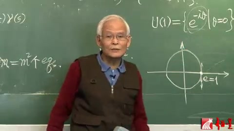
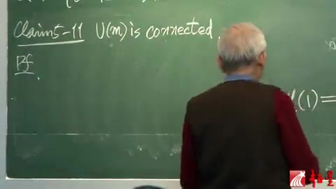
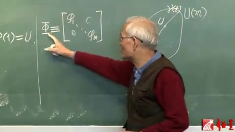
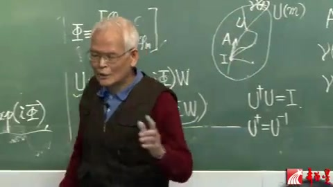

李群李代数 第28讲 酉群（续）¶
自动生成的课程注解文档（共 6 个段落，原始视频）
目录¶
段落 1¶
时间： 00:00:00 ~ 00:05:00
📝 原始字幕
好,這個是關於維術 那你可以驗證一下 比如說剛才我們講那個 我們把那U溫泉擦進去留下 U溫泉 這個U溫泉剛才說了就是這麼一個流行 當然是一為了 一為的10流行原中 那麼對不對呢 M等於1的平方就1對點 那麼當然其他的M為級 你也可以驗證 總之這個就解決了 那麼我們剛才講完那個 李群 有群 作為李群來講的時候 舉了一個例就是U溫泉 現在又講了有群的理代數了 那麼我們也舉一個例 就舉這個U溫泉 它的理代數 這就是Example 2 是講 U溫泉的理代數 於華語溫了 那麼你猜猜這怎麼回事呢 它無非就是這個航等源 一等於溫 這是十軸就是虛軸 航等源的切實量 那麼就是說航等源切於這個 你這下水量都沒用的 你得切於這個流行 這個流行就這個原軸 那就是這些切實 長得短的 往這個方向的等等 那麼實際上你真求 什麼很簡單 你看看 整個U溫泉的元素 都可以這麼寫 那麼有一個參數 非它來決定 那麼整個這個東西 不就是Exponential 跨胡 富埃非他嗎 那麼這個東西其實是什麼呢 就是一個單參子群 就是說這個理群本身 是這個圈 你可以認為單參子群 也是這個圈 所以就充當一個單參的參數 你要驗證它真實單參子群 得滿足這個條件界的嗎 現在那個T也好 先說T吧 參數T吧 現在叫Fate 那麼你再加一個S 那叫FatePine 你驗證一下肯定是滿足的 所以它是個單參子群 那麼有了單參子群了 你求這個單參子群 做了一條曲線 在航檔源的切實 它就應該是 理彈數的一個元 這個理彈數就以為的 找出一個元來 那麼就可以充當基始了 那麼你在城上長數 那不就是整個理彈數 就出來了嗎 那好 那我們現在就求那個 單參子群的切實 那麼就應該是D100D 現在那個參數我們寄作Fate 那麼應該在Fate維靈的地方 就是很長元處 求這個單參子群 到切實 那太容易了 那麼就是Minus i 一圖的iMinus iF 然後再Fate維靈去處取職 那麼就是腐i 那麼這個腐i本身 你就可以看成一個 一乘一的腐劇戰 它就是UF1 花UF1 這個理彈數裡面的一個元素 那麼由於是以為的 其他元素無非就是 用一個長數去承他 就是了 那麼所以呢 這個花UF1 就可以寫成腐i作為基始 成上摩承數寄到F2 長時數 L1跑變全R1 這個就是 有群 M1的那個有群的理彈數 那邊是理群 這邊是理彈數 我們寄這麼一個簡單的例子 關於U2 這個群 U2群 這個例子我們後面 講別的問題的時候 我覺得下一屆 好了
课程截图：



注解¶
这段课程视频（梁灿彬教授主讲）深入讲解了李群 \(U(1)\) 与其李代数 \(\mathfrak{u}(1)\) 的对应关系，是理解"群-代数"局部同构的经典范例。以下从公式、理论、直观三个层面进行注解。
1. 板书/PPT 公式解析¶
根据截图与字幕，黑板上出现的核心公式及其符号含义如下：
公式①：\(U(1)\) 群的参数化表示¶
- \(U(1)\)：1阶酉群（Unitary group of degree 1），由所有模为1的复数（即 \(e^{-i\theta}\)）组成，在乘法下构成群。
- \(\theta\)：实参数（字幕中的"非它"），对应圆心角。
- 几何意义：该集合对应复平面上的单位圆（截图中所画的圆），群乘法对应圆上点的旋转相加。
公式②：单参数子群（One-parameter subgroup）的验证条件¶
- \(\gamma(\theta) = e^{-i\theta}\)：从李代数到李群的指数映射曲线。
- 验证：\(e^{-i(\theta_1+\theta_2)} = e^{-i\theta_1} \cdot e^{-i\theta_2}\)，满足同态条件，证明这是一个单参数子群。
公式③：李代数生成元的计算（切向量）¶
- 左侧：在单位元（\(\theta=0\)，即 \(e^0=1\)）处对群元素求切向量（速度向量）。
- 右侧：\(-i\)（字幕中的"腐i"），作为 \(1\times 1\) 的反对称（反厄米）矩阵，是李代数 \(\mathfrak{u}(1)\) 的基矢。
公式④：李代数 \(\mathfrak{u}(1)\) 的完整结构¶
- \(\mathfrak{u}(1)\)（字幕"花UF1"）：\(U(1)\) 的李代数，由所有纯虚数（反厄米 \(1\times 1\) 矩阵）组成。
- \(\lambda\)：任意实数（字幕中的"L1跑變全R1"）。
- 维度：1维实向量空间，与实数轴 \(\mathbb{R}\) 同构。
2. 必要理论背景补充¶
(1) 李群与李代数的"微分-积分"关系¶
- 李群 \(U(1)\) 是全局的、弯曲的流形（圆）。
- 李代数 \(\mathfrak{u}(1)\) 是局部的、线性的切空间（在恒等元 \(e=1\) 处的切线，即虚轴）。
- 指数映射 \(\exp: \mathfrak{u}(1) \to U(1)\) 将切空间"卷"回流形：\(\exp(-i\lambda) = e^{-i\lambda} \in U(1)\)。
(2) 单参数子群与切向量¶
- 每个李代数元素 \(X \in \mathfrak{g}\) 通过指数映射生成一条单参数子群 \(\gamma(t) = \exp(tX)\)。
- 反之，对任意单参数子群 \(\gamma(t)\)，其在 \(t=0\) 处的导数 \(\gamma'(0)\) 给出一个李代数元素。
- 本例对应：\(X = -i\)，\(\gamma(\theta) = e^{-i\theta}\)，\(\gamma'(0) = -i\)。
(3) 物理意义¶
- 在量子力学中，\(U(1)\) 是相位对称性群；\(\mathfrak{u}(1)\) 的生成元 \(-i\)（或 \(i\)）与电荷、粒子数等守恒量通过诺特定理相联系。
3. 通俗语言解释核心概念¶
把 \(U(1)\) 想象成一个"钟表盘"（单位圆）： - 李群就是钟表盘上的所有刻度点，你可以做"旋转"操作（乘法）。 - 恒等元是12点位置（数字1，对应复数 \(1+0i\)）。 - 李代数就是你在12点位置瞬间的运动方向——切线方向。对于圆来说，这个方向是垂直的（纯虚轴方向）。 - 指数映射就像把切线（直线）卷起来贴在圆上：切线上走 \(\lambda\) 步，对应圆上转 \(\lambda\) 弧度。
为什么是 \(-i\)？ - 复数 \(e^{-i\theta} = \cos\theta - i\sin\theta\)。 - 对 \(\theta\) 求导得 \(-i e^{-i\theta}\)，在 \(\theta=0\) 处就是 \(-i\)。 - 这表示在恒等元处，"沿着群参数增加方向"的切向量指向 \(-i\) 方向（向下，若实轴水平向右）。
4. 截图板书内容描述¶
截图1（左）： - 梁灿彬教授手指黑板右侧的公式，正在讲解 \(U(1)\) 的定义。 - 黑板右侧清晰写出：\(U(1) = \{ e^{-i\theta} \mid \theta = 0 \dots \}\)（参数集）。 - 下方画有复平面单位圆：实轴（标有 \(e=1\)，即恒等元位置）与虚轴，圆上示意性标出一点。
截图2（中）： - 教授转身面向学生，黑板上可见左侧有单参数子群的乘法条件 \(\gamma(t+s) = \gamma(t)\gamma(s)\) 的部分表达式。 - 右侧 \(U(1)\) 定义与单位圆图示保持可见。
截图3（右）： - 教授正在书写求导过程，黑板上可见： \(\left.\frac{d}{d\theta}e^{-i\theta}\right|_{\theta=0} = -i e^{-i\theta}\big|_{\theta=0} = -i\) - 这对应字幕中"單參子群的切實...就是Minus i"的推导过程，明确展示了如何从群流形提取出李代数元素 \(-i\)。
总结： 本段通过 \(U(1)\) 这一最简单非平凡李群，示范了"群（圆）→ 单参数子群（指数曲线）→ 切向量（求导得 \(-i\)）→ 李代数（虚轴）"的完整逻辑链，为后续讲解更复杂的 \(U(2)\)、\(SU(2)\) 等李群奠定了直观基础。
段落 2¶
时间： 00:05:00 ~ 00:06:05
📝 原始字幕
這個理彈數 有暫時又高一節了 現在在 發生回來 再看這個理群 就是有群 它是個理群了 這個理群 我們剛才已經從 它的特末能來看 這個特末能 不就是 只能取這些點 那麼已經感覺到它是 有可能是連通流行 現在我們就來證明 果然如此 這就是 L1 U of M is connected Connected 就是連通的 這句話就是說 U of M 這個有群 是連通流行
课程截图：

注解¶
这段课程视频（梁灿彬教授主讲）聚焦于李群 \(U(1)\) 的拓扑性质——连通性（connectedness），并可能涉及利用单参数子群证明这一性质的方法。以下从公式、理论、直观三个层面进行注解。
1. 板书/PPT 公式解析¶
根据字幕与截图，当前段落核心命题与辅助公式如下：
核心命题：\(U(1)\) 的连通性¶
或等价表述：
符号说明： - \(U(1)\)：1阶酉群（Unitary group of degree 1），即所有模为1的复数构成的乘法群 \(U(1) = \{z \in \mathbb{C} \mid |z| = 1\}\)，拓扑上同胚于圆周 \(S^1\)。 - connected：拓扑学中的连通性，指空间不能被分解为两个非空、不相交的开集之并。 - 流形（manifold）：局部具有欧氏空间结构的拓扑空间，\(U(1)\) 作为李群是一维紧致光滑流形。
截图中的辅助公式（单参数子群）¶
黑板上可见的残留或辅助公式：
- \(\gamma\)：从实数轴 \(\mathbb{R}\) 到李群 \(G\) 的连续群同态，称为单参数子群（one-parameter subgroup）。
- 函数方程：表明 \(\gamma\) 保持群结构（将实数加法映射为李群乘法），是连接李代数（切空间）与李群的指数映射的积分曲线。
其他标注¶
- "\(m^2\) 个 eqs"：指在讨论李群表示或结构常数时，\(m\) 维矩阵表示所需满足的约束方程数量（eqs = equations）。
2. 理论背景知识¶
李群的连通性（Connectedness）¶
李群 \(G\) 兼具群结构和微分流形结构，其连通性是整体拓扑不变量： - 定义：若流形 \(M\) 不能表示为 \(M = U \cup V\)，其中 \(U, V\) 为非空不相交开集，则称 \(M\) 连通。对李群而言，连通等价于道路连通（path-connected），即任意两点可用连续路径连接。 -
段落 3¶
时间： 00:06:12 ~ 00:11:12
📝 原始字幕
這個證明有點意思 假如說 這是U of M 證明一個流行 它有個空檔源 我們叫做i 所謂它是連通的 那就是 for any U of M 就是說 人家隨便給你一個群元 叫做U 你都能夠 找到一條線 一條連續曲線 使它能夠從i 連到這個U 去 如果證明這條了 那麼就 是了 連通的了 那麼這條線 你當然也可以換長一些 這條線我記得 Game of T吧 所以就是說 我們現在 大證的是什麼呢 就是for any U in U of M 存在著 要證明存在著 一條曲線 Game of T such that Game of Zero 等於i Game of 比如說7萬吧 它等於U 如果對認譯一個群元U 能找到一條曲線 滿足這個的話 那這個流行 就是連通的了 那麼現在 我們 來證明 真能找找 你現在不就 所以現在 這個時候帶障的答問號 你現在 給的不就是 一個 有具戰 有群的群元 就是有具戰 那麼根據數學 你可以查有關的數學數 也就現行單數的 可以證明 對於 認譯 認譯一個有具戰 都可以用一種 有變化 來給它對繳化 粗略實際上 戲劇的還有 我先把那粗略的說一下 這不是認譯 一個有具戰嗎 總可以通過一個有變化 給它對繳化 什麼就有變化呢 就是 我先在寫一遍 Foreign EU in UofM 就是說對於 認譯的一個有具戰 所謂可以 通過有變化 就是舉存在另外一個 有具戰 我記得W 它也是有具戰 FudgeZ UW和它的粒 去加鞋這個U的時候 W和W的粒 去加鞋這個U 之後會等於一個大低 這個大低 就是一個對繳具戰 那不就對繳化了嗎 怎麼對繳化呢 通過這樣一個變化 這個變化 所用的具戰 是有具戰 所以這樣一個 被變化的是有具戰 這人家給的 你只要給了我一個有具戰U 我說我一定能夠繳繳 一個有具戰W 那麼這樣做變化 叫了有變化 就把U就變成一個對繳具戰了 還沒完 而且這個對繳具戰 是這樣 它的對繳源是這樣的 我把那個對繳具戰寫出來 對繳源都是1 然後是i 51 1i 5m 這樣一個對繳源 這樣一個對繳具戰 其中 這個5m 你知道5m 是實數 那麼當然這個 但i它還是個伏手 是個伏的對繳具戰 但是這些是實數 那麼現在 我說 我引進這麼一個伏伏 大塊 代表這樣一個 實的單位具戰 就是用這些一個
课程截图：



注解¶
这段课程视频（梁灿彬教授主讲）深入讲解了李群 \(U(m)\)（\(m\) 阶酉群）的拓扑性质——连通性（connectedness），并展示了如何通过酉对角化构造显式的连接路径。以下从公式、理论、直观三个层面进行注解。
1. 板书/PPT 公式解析¶
根据截图与字幕，黑板上出现的核心命题与构造公式如下（字幕中的语音识别误差已修正）：
公式①：连通性的路径定义（截图3）¶
符号说明： - \(\forall U \in U(m)\)：对于任意一个属于 \(m\) 阶酉群 \(U(m)\) 的矩阵 \(U\)（字幕："認譯一個有具战" → 任意一个酉矩阵） - \(\exists \gamma(t)\)：存在一条连续曲线（单参数子群）\(\gamma(t)\)（字幕："Game of T" → \(\gamma(t)\)，参数 \(t\) 通常取值于 \([0,1]\) 或 \([0,\tau]\)） - \(\gamma(0)=I\)：曲线起点为单位矩阵 \(I\)（字幕："空檔源" → 单位元/恒等元） - \(\gamma(1)=U\)：曲线终点为目标群元 \(U\)
公式②：酉对角化（Spectral Theorem）¶
符号说明： - \(D\)：对角矩阵（字幕："大低" → 对角矩阵；"對繳具战"） - \(W\)：酉矩阵（字幕："有具战" → 酉矩阵），满足 \(W^\dagger W = I\)，即 \(W^{-1} = W^\dagger\) - \(W^{-1}\)（或 \(W^\dagger\)）：\(W\) 的逆矩阵（字幕："粒" → 逆） - \(\text{diag}(\dots)\)：对角矩阵，对角元为 \(e^{i\phi_k}\)（字幕："對繳源都是1 然後是i 51..." 指对角元为 \(e^{i\phi_1}, \dots, e^{i\phi_m}\)） - \(\phi_k \in \mathbb{R}\)：实数相位角（字幕："5m" 应为 \(\phi_m\)，强调这些是实数）
公式③：显式路径构造（隐含于证明中）¶
符号说明： - \(t\)：实参数，从 \(0\) 变化到 \(1\)（字幕："實的單位具戰" 可能指参数 \(t\) 是实数，或指构造的矩阵是单参数的） - \(i\)：虚数单位 - 当 \(t=0\) 时，\(\gamma(0) = W^{-1} I W = I\)；当 \(t=1\) 时，\(\gamma(1) = W^{-1} D W = U\)
2. 理论背景知识¶
谱定理（Spectral Theorem for Unitary Matrices）¶
这是线性代数中的核心定理：任意酉矩阵 \(U\) 都可以被酉对角化。即总存在一个酉矩阵 \(W\)（可视为基变换），使得 \(W U W^{-1}\) 成为对角矩阵。由于 \(U\) 是酉的，其对角元的模必须为 1，因此可表示为 \(e^{i\phi_k}\)（相位因子）。
单参数子群（One-parameter Subgroup）¶
李群 \(U(m)\) 的李代数 \(\mathfrak{u}(m)\) 由反厄米矩阵（\(A^\dagger = -A\)）构成。通过指数映射 \(\exp(tA)\) 可以生成从单位元出发的单参数子群。本证明中构造的 \(\gamma(t)\) 本质上是一族单参数子群的"共轭"（由 \(W\) 和 \(W^{-1}\) 夹逼）。
连通性的拓扑定义¶
一个拓扑空间是道路连通（path-connected）的，如果对于任意两点，都存在一条连续曲线连接它们。对于李群，证明其连通性通常等价于证明：任意群元 \(U\) 都位于从单位元 \(I\) 出发的某条单参数子群的像上（或可通过有限条这样的路径连接）。
3. 通俗语言解释核心概念¶
证明策略的直观理解： 想象 \(U(m)\) 是一个复杂的"多维岛屿"。要证明这个岛屿是连通的（没有孤立的湖泊或飞地），你需要证明：从任意地点 \(U\) 都能走回大本营 \(I\)。
第一步：简化问题（对角化） 直接处理一个复杂的 \(m \times m\) 酉矩阵 \(U\) 很困难。证明中利用"酉变换"（一种保持结构的旋转）\(W\)，把 \(U\) "旋转"到一个标准坐标系中，使其变成简单的对角矩阵 \(D\)。对角矩阵就像 \(m\) 个独立的"旋钮"，每个旋钮只是做一个相位旋转（\(e^{i\phi_k}\)），互不干扰。
第二步：构造简单路径 对于每个独立的旋钮 \(e^{i\phi_k}\)，我们可以轻松地构造一条"慢慢旋转"的路径：从 \(1\)（不旋转）开始，随着时间 \(t\) 从 \(0\) 到 \(1\)，逐渐旋转到 \(e^{i\phi_k}\)（即路径 \(e^{it\phi_k}\)）。这相当于 \(m\) 个独立的 \(U(1)\) 路径。
第三步：翻译回原坐标系 通过逆变换 \(W^{-1}\)，把这组简单的"旋钮转动"路径 \(\text{diag}(e^{it\phi_k})\) 翻译回原来的坐标系，就得到了连接 \(I\) 和 \(U\) 的连续曲线 \(\gamma(t)\)。由于酉变换是连续的，这条路径在 \(U(m)\) 中保持连续。
4. 截图中的板书内容描述¶
- 截图1：黑板左上角清晰书写着 "Claim: \(U(m)\) is connected."（命题：\(U(m)\) 是连通的），下方标有 "Pf."（Proof，证明）字样，表明进入证明环节。教授背对镜头，正在书写。
- 截图2：黑板右侧绘有一个椭圆形示意图，代表流形 \(U(m)\)。椭圆内部左侧标有字母 \(I\)（单位元），右侧标有字母 \(U\)（任意群元），两者之间用一条平滑曲线连接，直观展示了"存在连续路径连接单位元与任意群元"这一核心思想。
- 截图3：黑板中央书写着连通性的严格数学定义： \(\forall U \in U(m),\ \exists \gamma(t) \text{ s.t. } \gamma(0)=I,\ \gamma(1)=U\) 这正是道路连通性的标准定义：对于任意 \(U\)，存在曲线 \(\gamma\) 连接 \(I\) 和 \(U\)。教授正用手指向该公式进行讲解。
段落 4¶
时间： 00:11:12 ~ 00:15:57
📝 原始字幕
5m 小5m 到小5m 做對繳源 不是單位具戰對繳具戰 這個大塊是這樣一個具戰 其他是零 那不就是對繳具 這個也是零 那麼這個不就是 對繳具戰 而且這些都實數 所以這個我另大塊 是這麼一個 實的對繳具戰 那麼你就很容易證明 這個大地 是等於 Exponential 就是這個E了 ofi 就是這個i了 大塊 你直觀的感覺 如果第一是這麼一個具戰 犯是這麼一個實舉戰 它是不是 就可以寫成這個呢 那麼這是直觀感就是對的 嚴格證明你自己寫一寫 就是一道息體 所以 就等於Exponential i5 然後 這個具戰等式 左成一個W粒 右成一個W 那麼這個就成 又自己了 而這個呢 就是左成一個W粒 Exponential i大塊 然後右成一個W 那麼這個 令我們上次講的 一個公式 它跟它就可以進來Exponential裡面了嗎 就是Exponential 克服呢 這個i可以寫的前頭 然後是W粒 5W 你要注意W也好 換也好 W粒也好 它都是具戰 那個順序別交換 i5所謂 所以可以交換 跟它都行 那麼我們就發現 哦原來這個U啊 是可以寫成這麼一個 這麼一個東西的Exponential的 現在我問你 你希望這個東西 是什麼呢 我管它叫做A的話 我說我很希望這個A 滿足這一條 為什麼 你自己感覺感覺 待會兒再 再講吧 但是現在呢 我得先證明 如果你把這個具戰叫大A的話 你答一真的滿足這個 反而比具戰 我來證這個 那麼 為此這個大A你來 求第二個 究竟該是這裡面 這麼多東西來第二個 就是I W inverse 5 W 擴起來 求第二個 就是Transpose之後啊 再加報 那麼 這個包還擺在那 這個I的Transpose 就它自己 然後剩這三個東西啊 求Transpose 具戰聯城的那個轉距 一個倒過來 轉距相成 就是W 這個W先寫前面 有個Transpose 第二個就是Fine Fine也有個Transpose 然後就是W Ni 也有個Transpose 但是 這個Fine是什麼 Fine是一個對腳具戰 那麼轉距跟不轉一樣 所以這個氣不一樣了 那麼這個在往下走 那麼這麼多具戰的相連城 再取Bah 就等於每一個先取Bah 再連城 那麼I 取Bah就是Fine 然後就是W Transpose的Bah 然後就是Fine的Bah 但是Fine是10具戰 8不8是一樣的 也就不8了 那麼這個W inverse Transpose 再來一個Bah 好 這個又等於什麼呢
课程截图：



注解¶
这段课程视频（梁灿彬教授主讲）深入讲解了\(U(m)\) 连通性的构造性证明，核心是通过酉对角化将任意酉矩阵 \(U\) 显式地表示为矩阵指数 \(U = e^{iA}\)，从而构造出连接单位元 \(I\) 与 \(U\) 的连续路径。以下从公式、理论、直观三个层面进行注解。
1. 板书/PPT 公式解析¶
根据截图与字幕（语音识别误差已修正），黑板上出现的核心公式如下：
公式①：特征相位矩阵（截图1-2）¶
- \(\Phi\)（大写Phi）：实对角矩阵，对角元为 \(\phi_1, \dots, \phi_m \in \mathbb{R}\)，代表酉矩阵 \(U\) 经对角化后的特征相位（eigenphases）。
- "实对角"的关键性：由于 \(U\) 的酉性，其特征值模为1，可写为 \(e^{i\phi_j}\)，故相位 \(\phi_j\) 必为实数。这保证了后续构造的生成元 \(A\) 具有厄米性。
公式②：指数映射的共轭分解（截图3）¶
- \(U\)：\(m\) 阶酉群 \(U(m)\) 中的任意元素（\(U^\dagger U = I\)）。
- \(W\)：酉矩阵（\(W \in U(m)\)），满足 \(W^\dagger = W^{-1}\)，其列向量为 \(U\) 的归一化特征向量。
- \(\text{Exp}\)：矩阵指数映射，\(\text{Exp}(X) = \sum_{n=0}^\infty \frac{X^n}{n!}\)。
- 关键等式：第二等号利用了指数映射的共轭不变性——对于酉矩阵 \(W\)，有 \(W^\dagger e^{i\Phi} W = e^{i W^\dagger \Phi W}\)。这相当于把"在 \(W\) 基下的转动"转化为"在标准基下由 \(W^\dagger \Phi W\) 生成的转动"。
公式③：厄米生成元 \(A\) 的定义与验证¶
\(A^\dagger = A\)
段落 5¶
时间： 00:16:04 ~ 00:21:05
📝 原始字幕
關鍵就是W是什麼 它也是有群 有具戰 有具戰技的嗎 那個是擦掉了 有具戰的 如果寫U的話 就是U的格 U成U這個具戰是等於 單位具戰的 換句話說 這個U的格 它就是U的力了對不對 因為只有你 因為你跟U相成 是I 那麼好了 這個W 現在就充當那個U 那麼Transpose 再加Bah 就是Dagger 它的Dagger 就是它的力 所以這就是W 這個Fine就照超 那麼這個的力完以後 再求 一個力 就沒有力了 就這樣 多棒 What's this This is nothing but Matrix A 它就是具戰A 那不是等於Fa了嗎 那我了萬天 這個A 就是個 理代數源 也就是說 理群的很等原 得 一個切實 那麼 我們不是要找 一條曲線嗎 使得怎麼樣 怎麼樣 你現在看這個曲線怎麼找 這個曲線 就是這個A 生出來的那個 單餐子群 你可以取 現在我就取Gamoff性 我說我找到了 Gamoff性是什麼呢 就等於ExpoNancer A就這個A 那麼它為什麼對頭了 那你驗證一下 Gamoff 0 怎麼樣 0 這個是0 那麼ExpoNancer of 0 就是 I 這個對頭了吧 那麼Gamoff 1 就是T1 T1就是ExpoNancer A了 ExpoNancer A 拿出了 這 ExpoNancer A就是 U 就不覺得對頭了嗎 找找了 這麼一條曲線叫Gamoff T 找找了使得它 果然滿足我們那個要求 那就是說 任意一個群員 都可以有一條曲線 連曲曲線 把它跟行等圓連到一起 你換這一點 有這麼連換 這一點 那不就連通了嗎 我們就證明完了 這個CAM 這個CAM說 The unitary group U of M is connected 連通的 其實我們這個證明 比這個CAM 還要強 剛才我們說 能找找一條線就行 而這個問題沒有了 就完了 能找找滿足這個要求的一條線就行 可是我們現在找找那條線 不是一般的阿貓阿狗 它是一條好線什麼意思 當餐子群 它比較特別 你要找一條線 也連通了 但是我找找的是 這麼好一條線 那就說 這個 有群裡面任何一個群員 它總能屬於某一個 單餐子群的 我記得 上次有一個同學 就問了一個很好的問題 就是說 隨便給一個理群 我們就在那個 連通分支離開問題吧 那麼在連通分支離 連通分支 當然是含有那個 橫等圓 那個連通分支了 就這個 在那個連通分支離 我隨便取一個群員 我是不是一定 可以 是某個單餐子群裡 為了一個元素呢 就說 隨便一個理群 叫做G 你可能還有另外一塊 你那塊要給一個元素 這叫小G 你說想跟它 有它連續出現 那做夢 不可能 人家沒完這麼一個傻問題 人家說我叫來個G 是 那麼 因為它是連通分支嘛 找一條線就連它
课程截图：


注解¶
这段课程视频（梁灿彬教授主讲）的核心贡献是给出了 \(U(m)\) 连通性的构造性证明，并揭示了更深层的结构：\(U(m)\) 中任意元素都落在某个单参数子群上。以下从公式、理论、直观三个层面进行注解。
1. 板书/PPT 公式解析¶
根据截图与字幕（语音识别误差已修正），黑板上出现的核心公式与逻辑链条如下：
公式①：酉对角化（Spectral Decomposition）¶
符号说明： - \(U \in U(m)\)：任意 \(m\) 阶酉矩阵（目标群元）。 - \(W \in U(m)\)：酉矩阵（对角化矩阵），满足 \(W^\dagger = W^{-1}\)（即字幕中反复提到的“\(W\) 的 Dagger 就是它的逆”）。 - \(\Phi\)：相位对角矩阵，对角元为模为1的复数 \(e^{i\phi_k}\)（\(\phi_k \in \mathbb{R}\)），代表 \(U\) 的本征值。 - \(W^\dagger\)：厄米特共轭（Hermitian conjugate），即转置加复共轭（字幕中“Transpose 再加 Bah（共轭）就是 Dagger”）。
公式②：李代数元的显式构造¶
符号说明： - \(A\)：李代数 \(\mathfrak{u}(m)\) 的元素（李代数元）。 - \(\tilde{\Phi} \equiv \text{diag}(\phi_1, \dots, \phi_m)\)：实对角矩阵（相位角）。 - \(i\)：虚数单位。此构造确保 \(A\) 满足反厄米特性（anti-Hermitian）：\(A^\dagger = -A\)（黑板上可见 \(A^\dagger = (iW\tilde{\Phi}W^\dagger)^\dagger = -iW\tilde{\Phi}W^\dagger = -A\)），这正是酉群李代数 \(\mathfrak{u}(m)\) 的定义性质。
公式③：单参数子群（One-Parameter Subgroup）¶
符号说明： - \(\gamma(t)\)：单参数子群（字幕中“Gamoff 性”即 \(\gamma(t)\)）。 - \(\exp\)：矩阵指数映射（Matrix exponential）。 - \(t\)：实参数，可视为“时间”或“路径参数”。
公式④：连通路径的验证¶
逻辑验证： - 当 \(t=0\) 时，\(\exp(0) = I\)（单位矩阵，即群的恒等元）。 - 当 \(t=1\) 时，利用指数映射性质： \(\exp(A) = \exp(iW\tilde{\Phi}W^\dagger) = W \exp(i\tilde{\Phi}) W^\dagger = W \Phi W^\dagger = U\) 这正是字幕中“ExpoNancer A 就是 U”的数学表达。
2. 必要的理论背景知识¶
(1) 李代数 \(\mathfrak{u}(m)\) 与指数映射¶
酉群 \(U(m)\) 是紧李群（compact Lie group），其李代数 \(\mathfrak{u}(m)\) 由所有 \(m \times m\) 反厄米特矩阵（\(A^\dagger = -A\)）组成。指数映射 \(\exp: \mathfrak{u}(m) \to U(m)\) 将李代数元映射到李群元。对于紧李群，指数映射是满射（surjective），即群中每个元素都能写成某个李代数元的指数。本段证明正是构造性地展示了这一满射性。
(2) 单参数子群（One-Parameter Subgroup）¶
在李群 \(G\) 中，单参数子群是指一个连续群同态 \(\gamma: (\mathbb{R}, +) \to G\)。几何上，它是群流形上的一条“直线”（更准确地说是测地线或单参数子流形），满足 \(\gamma(t+s) = \gamma(t)\gamma(s)\)。本段证明的关键在于：对于 \(U(m)\)，连接恒等元 \(I\) 与任意群元 \(U\) 的路径可以被选为一条单参数子群，而非任意的“阿猫阿狗”曲线。
(3) 连通分支与指数映射的局限性（教授最后提到的问题）¶
教授最后提及的学生问题涉及非连通李群（如 \(O(n)\) 正交群）。对于非连通李群，只有包含恒等元的那一支（identity component）能通过指数映射覆盖。即使在一个连通分支内，对于非紧李群（如 \(SL(2,\mathbb{R})\)），指数映射也可能不是满射（即存在群元不能写成任何李代数元的指数）。但 \(U(m)\) 作为紧李群，其恒等连通分支就是整个群，且指数映射满射，故任意 \(U\) 都属于某个单参数子群。
3. 通俗语言解释核心概念¶
“好线” vs “阿猫阿狗”： 教授用生动的语言区分了两种连通路径： - “阿猫阿狗”路径：任意一条连续曲线，只要能从 \(I\) 连到 \(U\) 即可，可能弯弯曲曲，没有群结构意义。 - “好线”（单参数子群）：一条笔直的、有代数结构的“高速公路”。你可以把它想象成“匀速旋转”——一旦确定了旋转轴（由 \(A\) 决定），剩下的就是按时间 \(t\) 匀速“转过去”。这种路径满足 \(\gamma(t)\) 在任意时刻 \(t\) 都构成一个子群（一维子群）。
为什么 \(A\) 是“生成元”？ 如果把 \(U\) 看作一个复杂的旋转（高维空间中的转动），那么 \(A\) 就是这个旋转的“对数”（\(\log U\)）。通过谱分解，我们把 \(U\) 拆解成 \(m\) 个独立的 \(U(1)\) 转动（相位 \(e^{i\phi_k}\)），每个相位对应一个“角速度” \(\phi_k\)。矩阵 \(A\) 就是这些角速度在原始坐标系下的“合成”。因此 \(\exp(tA)\) 就是“以恒定角速度 \(A\) 旋转 \(t\) 秒”，自然在 \(t=1\) 时到达 \(U\)。
连通性的直观： 既然任意 \(U\) 都能通过“匀速转动” \(\exp(tA)\) 从 \(I\) 到达，说明 \(U(m)\) 内部没有“孤岛”，从单位元可以“走直线”到达任何一点，因此是连通的。
4. 截图中的板书内容描述¶
截图1（左侧）： - 黑板右侧画有复平面示意图，标注实轴、虚轴，并画出单位圆（\(|z|=1\)），圆上可能标有 \(e=1\)（或 \(e^{i\phi}\)），示意 \(U(1)\) 的拓扑结构。 - 左侧有手写公式痕迹，可见 \(W^\dagger\) 等符号，对应教授讲解 \(W\) 的酉性质（\(W^\dagger = W^{-1}\)）。
截图2（右侧）： - 黑板顶部写有 "\(U(m) := \{m\text{维复空间上酉算符}\} = \{m\times m\text{酉矩阵}\}\)" 的定义。 - 中部正在推导 \(A^\dagger\) 的计算： \(A^\dagger = (iW\tilde{\Phi}W^\dagger)^\dagger = -i (W^\dagger)^\dagger \tilde{\Phi}^\dagger W^\dagger = -i W \tilde{\Phi} W^\dagger = -A\) 这验证了 \(A\) 的反厄米特性，即 \(A\) 确实是李代数 \(\mathfrak{u}(m)\) 的元素。 - 左侧可见 \(U^\dagger U = I\) 和 \(U^\dagger = U^{-1}\) 的基本定义，以及 \(U(m)\) 作为流形的示意图（圆圈代表 \(U(m)\)，点代表群元）。
段落 6¶
时间： 00:21:05 ~ 00:26:03
📝 原始字幕
那是不足為怪的 但是能找到一個 單餐子群連過去 這就是一個問號對吧 現在對於有群 我們就掌出來是有的 就單餐子群 那麼我們就好奇了 這個結論對任何理群都對嘛 任何理群可以不連通 還有那句話 它總有一個離子群 就是連通分支吧 在連通分支離 這個對嗎 答案是不對 沒有那麼一般 我給你舉個反例 挺有意思的一個反例 這是我偶然好多年前 偶然在一本英文書裡 看他一句話 他就說了這麼一句 但是他還不說 我還真想不起這個反例 就是 GLQ 一般相信群 M等1 這是很簡單的一個群 他在居戰 就是他的群員 就是二成二居戰 是吧 那麼我現在給你 這麼一個二成二居戰 非常簡單 -1 你算的行列是 等於正1 這個 首先他為仗就屬於他了 沒問題是個元素 還仗1的挺好 跟那個很等元 都是同樣的行列是 是吧 但是 就是這個元素 他就不再任何 一個單參子群上頭 那麼內書就一句話 但是有這個東西 就比什麼都強了 那後來我回去睡著的劍 我把它正出來了 現在就出城一道媳婷 這個媳婷本來是比較難的 但是我加了好幾步的提示 那麼難也變得不難了 我今天就把它作為媳婷 那麼 有興趣帳一帳 這個重要的就是 你覺得卻有反力 那麼有什麼規律可行為有呢 為什麼有群就有這麼好的性質 像這個GL2就沒有 關鍵就在於 這個有群跟它不同 那個不同 第一個不同想到了 就是它是非聯通的 有群聯通 但是現在不談這個非聯通問題 我老說你非聯通的 我就取那個聯通 含那個很等原點聯通分支 所以那肯定 肯定問題不在那 根本的區別 就是這個有群 是compact緊製的 緊製流行 這個比如說 U1也看出來了 是緊製的 這個你像那個 U11記得嗎 四條線 其中一關看這個離子群 這種張口的就非緊製的 那是U11群 但是這個U1群 它是緊製的 那麼由於 就是說有這麼一個定理 就是任何緊製的聯通離群 它的指數應射 一定是到上應射 指數應射什麼意思 那不就是這個離群裡 什麼的指數應射 很等原來出一個 隨便一個水量 就決定一個單纏子群 指數應射到這 參數就唯一的那點 那麼所謂指數應射到上 不到上 就是說會 所謂不到上 可能存在這麼一個點 這個點就沒有單纏子群果然 所以就找不著一個水量 使得它的指數應射到它 所以說指數應射到上不到上 就跟剛才說的 隨便給個點 能不能有單纏子群 經過它是一樣的 那麼剛才我們說了 你要有這個好性質的話 那個條件是什麼 就是謹峻的 聯通離群 那麼偏偏這個 它就是非謹峻的
课程截图：

